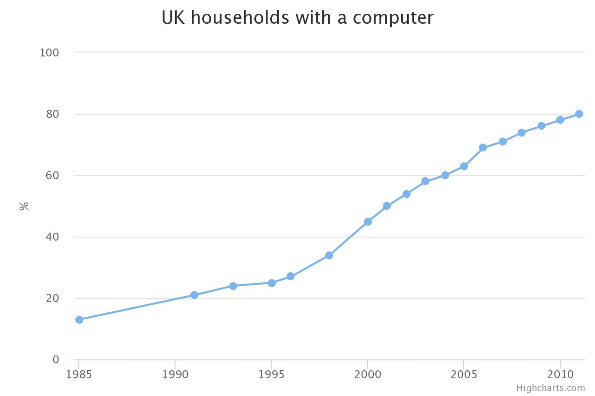

Who is Bill Gates?
_____________________
Bill Gates is an Enterpreneur and businessman. He built the world's largest software business known as Microsoft.
In the process of doing so he became one of the richest men in the world.
He is know for going through technological innovation, with a "keen" business strategy and with aggressive business tactics.
In just 25 years he managed to built a multibillion-dollar company and made himself the richest man in the world along the way. It is said that he accomplished this, not by inventing new technology, but by taking the existing technology and adapting to a specific market. He also managed to dominate that market using smart business tactics.
Important Facts on Bill Gates
_____________________
| Important Dates | Explanation |
|---|---|
| 28 October 1955 | Bill Gates was Born |
| March 1986 | He took Microsft public and became a milionaire |
| 1987 | He became a billionaire |
| 1 January 1994 | Melinda French and Bill Gates got married |
| 1973 | Graduation year from Lakeside |
| 1975 | Dropped out of college and formed "Micro-Soft" with Paul Allen |
| 1981 | Gates became the president and chairman of Microsoft |
| 1994 | Gates Foundation was established, which supported education, world health and low-income communities |
| February 2014 | Bill Gates stepped down has Microsoft's chairman |
Net Worth
_____________________
In March 1986 He took Microsoft public and managed to become milionaire at the age of 31. While in 1987 he became a billionaire and he remained at the top of the welthiest people in America ever since.
Contribution to Computer science
_____________________
The creation of microsoft made a huge impact on the world.
He managed to succeed on his dream of putting a "computer on every desk in every house", as right now, over a billion Pcs are in use in businesses and homes all around the world.
Microsoft used user fiendly software like Windows Office to attract people and they created a personal and easy experience for people to use. Bill gates also managed, using Microsoft, to change Pcs into different range of forms
such as laptops and provided their inventions even to third-world countries.
PCs have also helped autors, organistations, musicians and more to optimise their production.
Bill Gates managed to integrade Computers in every part of our lives!
many world's businesses have an important relationship with other global communities; they run on a Microsoft-based IT infrastructure.
The US.Department of Defence, also relies on Windows for smooth operations and security.

On August 24, 1995, Windows 95 was released to the public and it became a worldwide phenomenon. The operating system has features such as the start menu, and the taskbar. The software also had a graphical user interface and worked with nearly all the hardware available on the market.
From there, Home computers became more affordable and it soon became followed by Internet Explored
In 1998 Bill Gates managed to make Microsft into the world's biggest company.
Known biggest hits
_____________________
These include:
- Internet Explorer - It is the browser that has gotten more people on the web than any other browser.
- Microsoft Office - which included word, excel and powerpoint.
- Peripherals - Microsft managed to create many pheripheral devices such as joysticks, the wheel mouse, the known optical mouse and more
- Xbox - Contains a new generation of games and entertainment.
Quotes from Bill Gates _____________________
"Your most unhappy customers are your greatest source of learning"
"Life is not fair; get used to it"
"It's fine to celebrate success but it is more important to heed the lessons of failure"
Videos _____________________
This video below, shows Bill Gate's prediction on the future
This Video below, tells us about Bill Gates's History